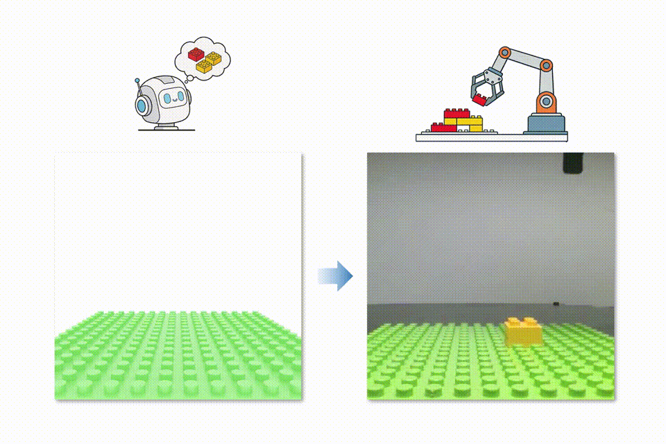

Efficient Dual-Arm Skill Learning and Refinement for Compositional Long-Horizon Assembly
Interlocking brick assembly provides a representative testbed for evaluating real-world robotic manipulation capabilities, where diverse structural designs, complex inter-step dependencies, intricate mechanical interactions and tight insertion tolerances pose substantial challenges. We present BrickCraft-Duo, a modular framework for long-horizon dual-arm collaborative assembly of interlocking bricks through data-efficient skill learning and composition. BrickCraft-Duo learns reusable single- and dual-arm assembly skills from diverse demonstrations, with bilateral symmetry alignment facilitating skill sharing across symmetric arms and assembly–support role assignments. Guided by stability-aware assembly reasoning, BrickCraft-Duo composes heterogeneous skills to achieve autonomous long-horizon execution, and further integrates human-in-the-loop correction for targeted skill refinement. The resulting system achieves long-horizon success rates of at least 60% and step-level completion rates of at least 95% across five real-world assembly tasks involving partially supported configurations, with horizons of up to nine steps.
Completion Rate: the ratio of successfully completed assembly steps to the total number of assembly steps in a long-horizon task.

BrickCraft: Visuomotor Skill Composition with Situated Manual Guidance for Long-Horizon Interlocking Brick Assembly
ArXiv, 2026

BrickSim: A Physics-Based Simulator for Manipulating Interlocking Brick Assemblies
ArXiv, 2026


APEX-MR: Multi-Robot Asynchronous Planning and Execution for Cooperative Assembly
RSS, 2025

BrickGPT: Generating Physically Stable and Buildable LEGO Designs from Text
ICCV, 2025

Physics-Aware Combinatorial Assembly Sequence Planning using Data-free Action Masking
IEEE RA-L, 2025


A Lightweight and Transferable Design for Robust LEGO Manipulation
International Symposium on Flexible Automation (ISFA), 2024
@misc{yu2026brickcraft,
title={BrickCraft-Duo: Efficient Dual-Arm Skill Learning and Refinement for Compositional Long-Horizon Assembly},
author={Jichuan Yu and Zhenyu Xiao and Ze Wang and Ruixuan Liu and Changliu Liu and Chuxiong Hu},
year={2026},
eprint={2605.07605},
archivePrefix={arXiv},
primaryClass={cs.RO},
url={https://arxiv.org/abs/2605.07605},
}